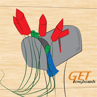
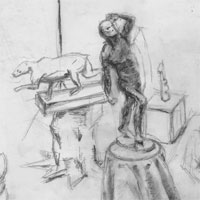

About Eric
Hyperactive copywriter, graphic designer and web designer in-training. Dog lover and powder snow addict. I graduate this summer with my Bachelor of Arts in Creative Advertising from Michigan State University. I’ve loved to draw and paint since I was a kid, which drew me to explore a creative career path. After previously taking classes in Ann Arbor (I thought I wanted to be a doctor coming out of high school. Pfff) and Kalamazoo, I’m glad that I found work that feels more like thoughtful art.
My goal is to work as a copywriter. I love wit, humor, sarcasm, and the impact of headlines and themelines. Writing copy while thinking visually creates awesome synergy in the design process.
Portfolio
- 
Drawings
- 
Contact
- gmail: eb.higg@gmail.com
- MSU: higgi100@msu.edu